Spatial RGB Features
bundle_image3DIntensity_spatial_rgb_factory provides fixed, training-free spatial features for small RGB images such as CIFAR-10. Every function processes R, G, and B independently, uses reflected boundaries, and returns an RGB image with the exact specialized size and pixel type.
Bundle contract
| Property | Contract |
|---|---|
| Getter | get_extension_spatial_rgbimg() |
| Specialization | I <: SizedImage3D{H,W,3,IntensityPixel{T}} |
| Input | one RGB image of type I, followed by at most two Real parameters |
| Output | exactly I, finite and bounded to [0,1] |
| MAGE arity | between 1 and 3 |
| Boundary handling | reflection |
This is an extension bundle, so it does not repeat identity_rgb or return_rgb. Place it after the basic RGB bundle:
using UTCGP
include(joinpath(dirname(pathof(UTCGP)), "..", "docs", "gallery_timing.jl"))
using ImageCore: N0f8
rgb = SImageND(IntensityPixel{N0f8}.(rand(32, 32, 3)))
rgb_type = typeof(rgb)
basic_rgb_bundle = only(get_extension_rgbimg())
spatial_rgb_bundle = only(get_extension_spatial_rgbimg())
basic_rgb_bundle[1].name, basic_rgb_bundle[2].name, length(spatial_rgb_bundle)(:identity_rgb, :return_rgb, 8)Both factory bundles must be specialized with rgb_type before being placed in the RGB output library.
Operators and parameters
| Function | Parameters | Result |
|---|---|---|
sobel_magnitude_rgb(rgb) | none | normalized channelwise gradient magnitude |
laplacian_magnitude_rgb(rgb) | none | normalized absolute second derivative |
gaussian_blur_rgb(rgb, sigma) | sigma ∈ [0.3,4] | Gaussian smoothing |
difference_of_gaussians_rgb(rgb, sigma1, sigma2) | both in [0.3,4] | normalized absolute band-pass response; order-independent |
unsharp_mask_rgb(rgb, sigma, amount) | sigma ∈ [0.3,4], amount ∈ [0,3] | rgb + amount*(rgb-blur) |
local_contrast_normalize_rgb(rgb, radius) | integer radius in [1,5] | local signed contrast mapped around 0.5; constant finite channels give exactly 0.5 before pixel conversion |
local_std_rgb(rgb, radius) | integer radius in [1,5] | normalized local texture energy |
gabor_energy_rgb(rgb, orientation, wavelength) | orientation modulo π, wavelength in [2,8] | phase-independent oriented texture energy |
Finite parameters are clamped to the ranges above. Non-finite parameters use documented neutral defaults: Gaussian 1, DoG (0.8,1.6), unsharp (1,1), local radius 3, and Gabor (0,4).
Coffee input and parameter examples
The examples use a half-resolution copy of coffee.png so the page exercises the same implementation while remaining quick to build.
Parameter-free edges

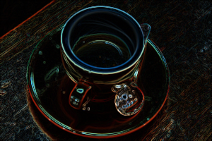
sobel_magnitude_rgb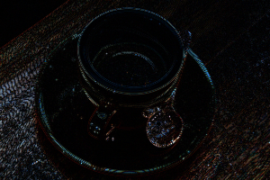
laplacian_magnitude_rgbGaussian scale
sigma = 0.5sigma = 1.5sigma = 3Difference-of-Gaussians scales
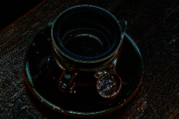
sigma = (0.5,1)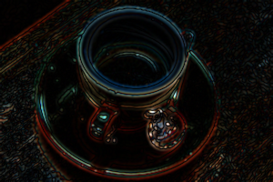
sigma = (1,2)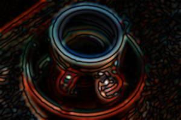
sigma = (2,4)Unsharp scale and amount

(sigma,amount) = (1,0)(0.5,1)(1.5,1)(1,2.5)Local window radius
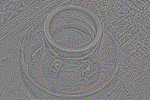
local_contrast, radius 1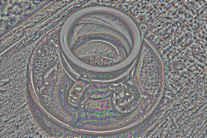
local_contrast, radius 3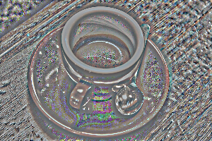
local_contrast, radius 5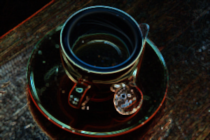
local_std, radius 1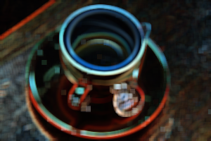
local_std, radius 3local_std, radius 5Gabor orientation and wavelength
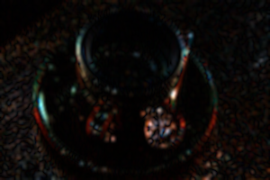
orientation = 0, wavelength 4
orientation = π/4, wavelength 4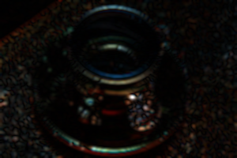
orientation = π/2, wavelength 4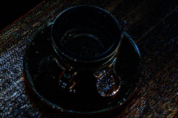
wavelength = 2, orientation π/4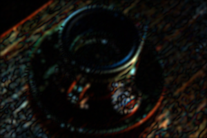
wavelength = 4, orientation π/4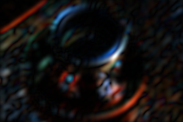
wavelength = 8, orientation π/4UTCGP.image3D_spatial_rgb — Module
Fixed, training-free spatial feature transforms for typed RGB images.
Bundles
UTCGP.image3D_spatial_rgb.bundle_image3DIntensity_spatial_rgb_factory — Constant
bundle_image3DIntensity_spatial_rgb_factoryTraining-free spatial transforms specialized for a concrete SImage3D{height,width,3,IntensityPixel{T}} output type. Every operator accepts an RGB image of that exact type, processes its three channels independently, uses reflected boundaries, and returns the exact specialized RGB type.
This is an extension bundle: it deliberately does not repeat the leading identity_rgb and return_rgb functions supplied by the basic RGB bundle. Add it explicitly with get_extension_spatial_rgbimg.
UTCGP.image3D_spatial_rgb.sobel_magnitude_rgb_image3D_factory — Function
Specialize sobel_magnitude_rgb(rgb) -> I, the normalized channelwise Sobel gradient magnitude.
UTCGP.image3D_spatial_rgb.laplacian_magnitude_rgb_image3D_factory — Function
Specialize laplacian_magnitude_rgb(rgb) -> I, the normalized absolute channelwise Laplacian response.
UTCGP.image3D_spatial_rgb.gaussian_blur_rgb_image3D_factory — Function
Specialize gaussian_blur_rgb(rgb, sigma) -> I; finite sigma is clamped to [0.3,4].
UTCGP.image3D_spatial_rgb.difference_of_gaussians_rgb_image3D_factory — Function
Specialize difference_of_gaussians_rgb(rgb, sigma1, sigma2) -> I; sigmas are clamped to [0.3,4].
UTCGP.image3D_spatial_rgb.unsharp_mask_rgb_image3D_factory — Function
Specialize unsharp_mask_rgb(rgb, sigma, amount) -> I; sigma is clamped to [0.3,4] and amount to [0,3].
UTCGP.image3D_spatial_rgb.local_contrast_normalize_rgb_image3D_factory — Function
Specialize local_contrast_normalize_rgb(rgb, radius) -> I; radius is rounded and clamped to [1,5].
UTCGP.image3D_spatial_rgb.local_std_rgb_image3D_factory — Function
Specialize local_std_rgb(rgb, radius) -> I, normalized channelwise texture energy with radius in [1,5].
UTCGP.image3D_spatial_rgb.gabor_energy_rgb_image3D_factory — Function
Specialize gabor_energy_rgb(rgb, orientation, wavelength) -> I; orientation wraps modulo π and wavelength is clamped to [2,8].
Timings for the examples
Measured during this documentation build. See Timing methodology for measurement limits and input cases that can make operators expensive.
spatial rgb setup
Julia 1.12.7; sapphirerapids; 1 Julia thread(s); optimisation level 2.
Times are warmed wall-clock measurements of the actual calls above, including invokelatest and allocations. Loading, factory generation and image rendering are excluded. CPU load and garbage collection affect these values. The maximum is the slowest observed sample, not a worst-case bound.
Numeric-only plot calls of the same operator and arity are grouped: argument ranges cover the sampled values, the median is the median of the per-case medians, and the maximum covers every observed sample. Image calls keep a row for each input/parameter combination.
| Operator | Inputs | Output | Median (µs) | Observed max (µs) | Allocated bytes (median) | Cases / samples |
|---|---|---|---|---|---|---|
| No measured calls |
spatial rgb gallery
Julia 1.12.7; sapphirerapids; 1 Julia thread(s); optimisation level 2.
Times are warmed wall-clock measurements of the actual calls above, including invokelatest and allocations. Loading, factory generation and image rendering are excluded. CPU load and garbage collection affect these values. The maximum is the slowest observed sample, not a worst-case bound.
| Input | Dimensions | Pixel storage |
|---|---|---|
| image #1 | 200×300×3 | IntensityPixel{FixedPointNumbers.N0f8} |
Numeric-only plot calls of the same operator and arity are grouped: argument ranges cover the sampled values, the median is the median of the per-case medians, and the maximum covers every observed sample. Image calls keep a row for each input/parameter combination.
| Operator | Inputs | Output | Median (µs) | Observed max (µs) | Allocated bytes (median) | Cases / samples |
|---|---|---|---|---|---|---|
sobel_magnitude_rgb | image #1 | 200×300×3, IntensityPixel{FixedPointNumbers.N0f8} | 4375.33 | 4529.85 | 3326536 | 1 / 3 |
laplacian_magnitude_rgb | image #1 | 200×300×3, IntensityPixel{FixedPointNumbers.N0f8} | 2366.27 | 2480.57 | 1703440 | 1 / 3 |
gaussian_blur_rgb | image #1; 0.5 | 200×300×3, IntensityPixel{FixedPointNumbers.N0f8} | 2792.74 | 2905.83 | 1788272 | 1 / 3 |
gaussian_blur_rgb | image #1; 1.5 | 200×300×3, IntensityPixel{FixedPointNumbers.N0f8} | 4074.43 | 4082.39 | 1835072 | 1 / 3 |
gaussian_blur_rgb | image #1; 3.0 | 200×300×3, IntensityPixel{FixedPointNumbers.N0f8} | 5464.36 | 67400.81 | 1914896 | 1 / 3 |
difference_of_gaussians_rgb | image #1; 0.5; 1.0 | 200×300×3, IntensityPixel{FixedPointNumbers.N0f8} | 5575.0 | 5590.76 | 3396360 | 1 / 3 |
difference_of_gaussians_rgb | image #1; 1.0; 2.0 | 200×300×3, IntensityPixel{FixedPointNumbers.N0f8} | 6679.67 | 6698.94 | 3443160 | 1 / 3 |
difference_of_gaussians_rgb | image #1; 2.0; 4.0 | 200×300×3, IntensityPixel{FixedPointNumbers.N0f8} | 10965.21 | 10974.83 | 3624648 | 1 / 3 |
unsharp_mask_rgb | image #1; 1.0; 0.0 | 200×300×3, IntensityPixel{FixedPointNumbers.N0f8} | 2905.75 | 3000.5 | 1788288 | 1 / 3 |
unsharp_mask_rgb | image #1; 0.5; 1.0 | 200×300×3, IntensityPixel{FixedPointNumbers.N0f8} | 2871.36 | 2878.95 | 1788288 | 1 / 3 |
unsharp_mask_rgb | image #1; 1.5; 1.0 | 200×300×3, IntensityPixel{FixedPointNumbers.N0f8} | 4156.47 | 4174.76 | 1835088 | 1 / 3 |
unsharp_mask_rgb | image #1; 1.0; 2.5 | 200×300×3, IntensityPixel{FixedPointNumbers.N0f8} | 2862.77 | 2880.83 | 1788288 | 1 / 3 |
local_contrast_normalize_rgb | image #1; 1 | 200×300×3, IntensityPixel{FixedPointNumbers.N0f8} | 4844.79 | 5096.55 | 3326632 | 1 / 3 |
local_std_rgb | image #1; 1 | 200×300×3, IntensityPixel{FixedPointNumbers.N0f8} | 4799.02 | 5066.74 | 3326632 | 1 / 3 |
local_contrast_normalize_rgb | image #1; 3 | 200×300×3, IntensityPixel{FixedPointNumbers.N0f8} | 7051.87 | 7106.82 | 3449464 | 1 / 3 |
local_std_rgb | image #1; 3 | 200×300×3, IntensityPixel{FixedPointNumbers.N0f8} | 7161.66 | 41519.69 | 3449464 | 1 / 3 |
local_contrast_normalize_rgb | image #1; 5 | 200×300×3, IntensityPixel{FixedPointNumbers.N0f8} | 9672.26 | 9697.36 | 3568120 | 1 / 3 |
local_std_rgb | image #1; 5 | 200×300×3, IntensityPixel{FixedPointNumbers.N0f8} | 9822.43 | 9938.46 | 3568120 | 1 / 3 |
gabor_energy_rgb | image #1; 0.0; 4.0 | 200×300×3, IntensityPixel{FixedPointNumbers.N0f8} | 10413.89 | 32042.29 | 17117760 | 1 / 3 |
gabor_energy_rgb | image #1; 0.7853981633974483; 4.0 | 200×300×3, IntensityPixel{FixedPointNumbers.N0f8} | 25704.05 | 26738.31 | 30745560 | 1 / 3 |
gabor_energy_rgb | image #1; 1.5707963267948966; 4.0 | 200×300×3, IntensityPixel{FixedPointNumbers.N0f8} | 9333.28 | 11506.56 | 17117760 | 1 / 3 |
gabor_energy_rgb | image #1; 0.7853981633974483; 2.0 | 200×300×3, IntensityPixel{FixedPointNumbers.N0f8} | 5716.07 | 8730.45 | 3285816 | 1 / 3 |
gabor_energy_rgb | image #1; 0.7853981633974483; 8.0 | 200×300×3, IntensityPixel{FixedPointNumbers.N0f8} | 15657.27 | 16115.03 | 34531848 | 1 / 3 |